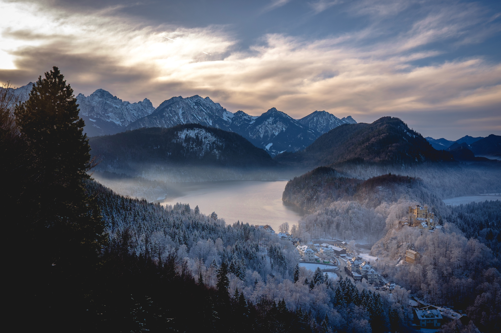

Dylan Lee
Types of photography: Landscape Cityscape
Introduction: I am a Singaporean, and spent some years in London as a History student
Origin story: I got into photography when I was studying in London, in an attempt to preserve and shape my memory of what I knew would be remembered as some of the most priceless years in my life
Favourite photo: The photo was taken during my third visit to Amsterdam, which I had intended to be a photography trip. Unfortunately, the weather had other plans, and I was greeted with unpredictably strong wind and rain, which not only heaped misery onto an already unseasonably cold winter, but also threatened to derail well-laid photography plans (especially because I had intended to do long exposure photography of the canals, which would not have been possible in those conditions). This shot remained precious to me not because of its technical brilliance (which it possesses very little of), but precisely because of how fortunate I was to have been able to take it during a brief respite from the poor weather conditions. To me, it not only made my trip worthwhile, but captured the spirit of a city that refused to allow its lustre to be dulled

Second favourite photo: The shot was taken in Germany, near the famed Neuschwanstein Castle. The conditions were perfect that day - the light soft, mist descending into the valley, and snow completing the fairytale look. Those were ideal conditions for photography - ones that I doubt I will ever have the privilege of experiencing again, which makes it even more priceless as a memory to cherish in the years to come
Equipment used: I'm a Fujifilm X shooter, and use both the X-T1 and X-H1. I shoot primes, and rely on the Fujifilm XF 35/1.4, Fujifilm 23/1.4, and Samyang 12/2.0 for my work
Advice for newbies: Shooting film helped me immensely, by conditioning me to be a lot more sensitive to lighting conditions (given that film can be less forgiving of poor metering technique especially if you don't process it yourself), and by training me to be a lot more conscious of my framing of shots. Most of all, film took away the instant gratification that digital cameras afforded, and therefore made every shot a much more deliberate exercise, especially since every press of the shutter cost money